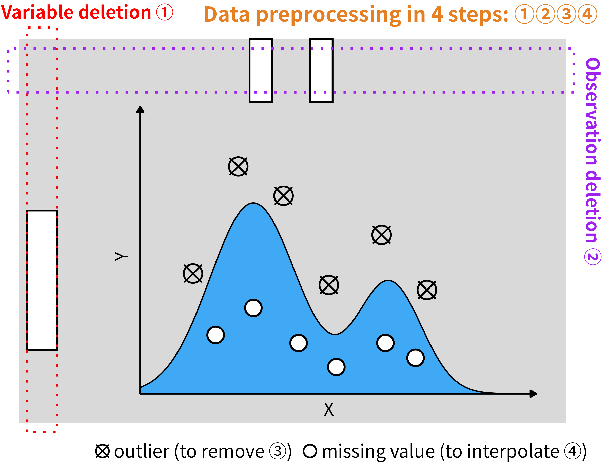
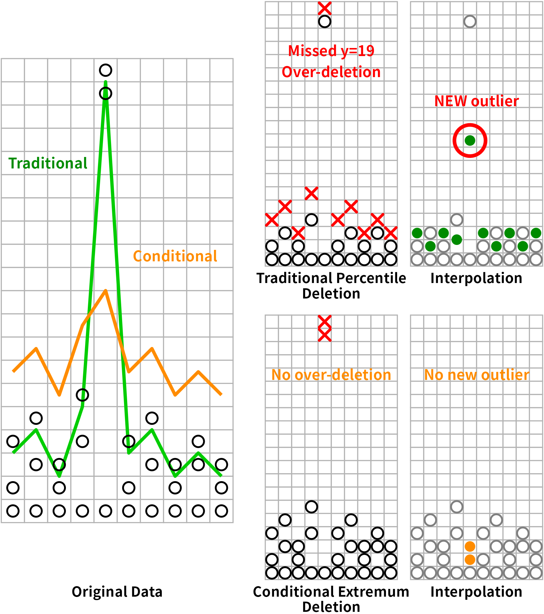
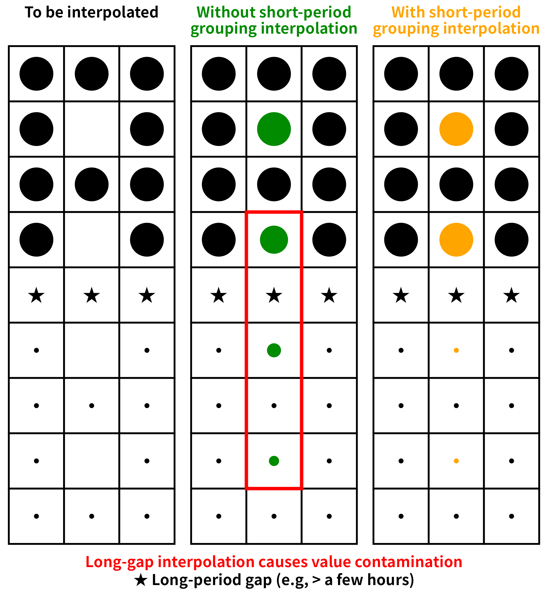

Fast, efficient, and versatile data preprocessing and reshaping tools for R, with C++ / OpenMP / SIMD backends.


In one paragraph
dataprep provides an opinionated, high-performance pipeline for cleaning tabular and time-series data. The 0.1.8.1 release rewrites the cleaning routines in C++ and delivers a speedup over 0.1.5 that ranges from about 1.0× (for varidele on some full-year data) to about 1146× (for condextr on full-year Ubuntu data). The melt() and dcast() reshaping functions are benchmarked against every one of the eight major alternatives in the R and Python ecosystems, at every tested scale (from 1,000 to 100,000,000 rows), on two reference hosts; the resulting speed-up ranges are 0.3×–1750.0× for melt(), 0.9×–1849.5× for dcast(), and 2.0×–872.4× for aggregated dcast(). On both hosts the output is identical to reshape2, data.table, tidyr, collapse, pandas, polars, dask, and duckdb.
Why dataprep
dataprep provides a coherent, opinionated pipeline for preprocessing tabular and time-series data:
-
Variable deletion by missing-value fraction (
varidele). -
Observation deletion by consecutive missing runs (
obsedele). -
Outlier removal by point-by-point weighted conditional extremum (
condextr) or by percentile (percoutl). -
Missing-value imputation within short periods (
shorvalu) or by linear / LOCF / NOCB / mean / median (impute_missing). -
Fast reshaping between wide and long formats (
melt,dcast) with SIMD + OpenMP. - Descriptive statistics, diagnostics, transformation, standardization, encoding, validation, and reporting.
- Time-series tools: detrending, diurnal-cycle removal, rolling statistics, lags, resampling, decomposition, drift detection, day/night and season flags.
-
Fit / transform interfaces (
prep_fit,prep_transform) that prevent data leakage during preprocessing.
Most heavy routines are written in C++ with Rcpp. Since 0.1.8.1, many operations are parallelized with OpenMP and vectorized with AVX2 / AVX-512 when the hardware supports it.
Design philosophy
The cleaning pipeline is organised around four sequential steps, each addressing a distinct failure mode of high-resolution environmental data:

Variable deletion. Drop size bins whose missing fraction exceeds a threshold, so downstream interpolation never has to extrapolate from far-away anchors.
Observation deletion. Drop rows whose selected columns contain a consecutive missing run longer than
halfminutes on both sides. Every remaining point then has a trustworthy anchor withinhalfminutes.-
Conditional extremum outlier removal. A single value can be a global maximum and still be legitimate, or vice versa.
condextr()judges each candidate in context.
-
Short-period grouping interpolation. After steps 1–3, remaining
NAs sit inside short gaps with a valid anchor withinhalfminutes.shorvalu()interpolates within each short segment only.
Interpolating across a long gap silently mixes two physically distinct regimes and can create new outliers at the segment boundary. Grouping by short segments keeps the interpolation local.
Steps 1–4 are wrapped by dataprep() for one-call use. The design reasoning is documented in full in vignette("dataprep-philosophy"). data1 in this package is the already-aggregated seven-column version of the same dataset; it is not a useful input for the cleaning pipeline.
Installation
Recommended (also builds the vignettes locally; needs pandoc and the R packages knitr and rmarkdown):
# install.packages("remotes")
remotes::install_github("chunshengliang/dataprep", build_vignettes = TRUE)Fallback (no extra dependencies):
remotes::install_github("chunshengliang/dataprep")The package requires a C++17 compiler (Rtools on Windows, Xcode / clang on macOS, gcc on Linux). The build_vignettes = TRUE variant additionally needs pandoc and the R packages knitr and rmarkdown; if any of those is missing, remotes will fail. Vignettes are also available on the package website: https://chunshengliang.github.io/dataprep/articles/.
Note for Windows users
When installing from GitHub with remotes::install_github(), Windows users may see:
Warning: file ‘dataprep/configure’ did not have execute permissions: corrected
Warning: file ‘dataprep/cleanup’ did not have execute permissions: corrected
This is expected and harmless. Windows NTFS does not preserve Unix execute bits, so R CMD build corrects them automatically. The configure.win and cleanup.win scripts still run, and the package installs and works normally — the warning does not affect any functionality in any way. Linux, macOS, and CRAN checks do not emit this warning, and Windows users installing the CRAN binary package with install.packages("dataprep") are not affected either.
Quick start
library(dataprep)
# The size-bin columns are the ones whose names are numeric
# (1.00, 1.12, ..., 1000). The four non-size columns
# (`date`, `tconc`, `TPNC`, `monthyear`) are excluded by this
# pattern.
size_bins <- grep("^[-+]?[0-9]*\\.?[0-9]+$", names(data))
cleaned <- dataprep(
data,
cols = size_bins,
group = 4, # monthyear
interval = 10,
times = 10,
intervals = 30
)
dim(cleaned)Performance
melt() and dcast() are benchmarked against all eight major alternatives across 10 shapes and 6 scales (1,000 to 100,000,000 rows). Every cell is measured with a C++ steady-clock timer and an adaptive times rule (20 / 15 / 10 / 5 / 1 iterations based on warmup time). Two reference hosts were used.
Reference host A — Ubuntu 25.10
| Component | Value |
|---|---|
| OS | Ubuntu 25.10 (Questing Quokka), kernel 6.17.0-41-generic |
| CPU | 2× AMD EPYC 9965 192-Core Processor (Turin, Zen 5c) |
| Physical cores | 384 (2 × 192) |
| Logical cores | 768 (SMT-2) |
| L1d / L1i | 18 MiB / 12 MiB |
| L2 | 384 MiB |
| L3 | 768 MiB |
| NUMA nodes | 2 |
| RAM | 1.0 TiB (16 × 64 GiB Micron, DDR5-5600, Multi-bit ECC) |
| Max frequency | 3.70 GHz |
| AVX-512 | Full (f, dq, ifma, cd, bw, vl, vbmi, vbmi2, vnni, bitalg, vpopcntdq, bf16) |
| R | 4.5.1 (2025-06-13) |
| Compiler | g++ 15.2.0 |
| reticulate | 1.47.0 |
| data.table | 1.18.6.1 |
| reshape2 | 1.4.5 |
| tidyr | 1.3.2 |
| Python | 3.13.7 |
| pandas | 3.0.6 |
| polars | 1.44.2 (runtime rt64) |
| dask | 2026.8.0 |
| duckdb | 1.5.5 |
Reference host B — Windows 11 Pro for Workstations
| Component | Value |
|---|---|
| OS | Windows 11 Pro for Workstations, 10.0.26100, Build 26100 |
| CPU | 2× AMD EPYC 7B12 64-Core Processor |
| Physical cores | 128 (2 × 64) |
| Logical cores | 128 (no SMT) |
| L1d / L1i | 4 MiB / 4 MiB |
| L2 | 64 MiB |
| L3 | 512 MiB |
| NUMA nodes | 2 |
| RAM | about 224 GiB (7 × 32 GiB, 2933 MT/s, Micron / Samsung, non-ECC) |
| Max frequency | 2.25 GHz |
| AVX | AVX, AVX2 (no AVX-512) |
| R | 4.6.1 (2026-06-24 ucrt) |
| Compiler | GCC 14.3.0 |
| reticulate | 1.47.0 |
| data.table | 1.18.6.1 |
| reshape2 | 1.4.5 |
| tidyr | 1.3.2 |
| Python | 3.13.15 |
| pandas | 3.0.6 |
| polars | 1.44.2 (runtime rt64) |
| dask | 2026.8.0 |
| duckdb | 1.5.5 |
The two hosts differ in core count, cache size and memory bandwidth. The relative ranking of the engines is identical on both; the absolute multipliers scale with the hardware. On a typical 8–16-core workstation the same comparisons remain within 10–100×.
All numbers below are medians in milliseconds. Each cell is written as time (speedup×), where time is the median for that engine and speedup× is time / dataprep_time. The dataprep column itself is the baseline, so it has no multiplier.
melt() — Ubuntu 25.10
Vary rows, 1 id + 9 value columns
| rows | dataprep | reshape2 | data.table | tidyr | collapse | pandas | polars | dask | duckdb |
|---|---|---|---|---|---|---|---|---|---|
| 1e3 | 0.152 | 0.410 (2.7×) | 0.260 (1.7×) | 2.805 (18.4×) | 0.175 (1.1×) | 2.195 (14.4×) | 0.594 (3.9×) | 15.1 (99.0×) | 5.435 (35.7×) |
| 1e4 | 0.243 | 0.453 (1.9×) | 0.346 (1.4×) | 3.305 (13.6×) | 0.248 (1.0×) | 2.644 (10.9×) | 0.689 (2.8×) | 15.1 (62.2×) | 12.5 (51.3×) |
| 1e5 | 0.380 | 1.172 (3.1×) | 1.038 (2.7×) | 8.204 (21.6×) | 0.812 (2.1×) | 6.824 (17.9×) | 1.558 (4.1×) | 17.4 (45.9×) | 89.3 (234.8×) |
| 1e6 | 1.441 | 8.145 (5.7×) | 7.937 (5.5×) | 65.8 (45.7×) | 6.542 (4.5×) | 60.7 (42.2×) | 10.6 (7.4×) | 46.1 (32.0×) | 758.1 (526.2×) |
| 1e7 | 38.0 | 368.8 (9.7×) | 368.8 (9.7×) | 1094 (28.7×) | 317.2 (8.3×) | 718.5 (18.9×) | 93.0 (2.4×) | 507.2 (13.3×) | 7418 (195.0×) |
| 1e8 | 398.6 | 3592 (9.0×) | 3584 (9.0×) | 11788 (29.6×) | 3632 (9.1×) | 7388 (18.5×) | 2597 (6.5×) | 4550 (11.4×) | 87982 (220.7×) |
Vary rows, 10 id (5 int + 5 chr)
| rows | dataprep | reshape2 | data.table | tidyr | collapse | pandas | polars | dask | duckdb |
|---|---|---|---|---|---|---|---|---|---|
| 1e3 | 0.207 | 0.576 (2.8×) | 0.432 (2.1×) | 3.164 (15.3×) | 0.235 (1.1×) | 5.831 (28.2×) | 1.156 (5.6×) | 53.9 (260.7×) | 12.0 (57.9×) |
| 1e4 | 0.505 | 2.018 (4.0×) | 1.775 (3.5×) | 4.865 (9.6×) | 0.580 (1.1×) | 6.384 (12.7×) | 1.770 (3.5×) | 54.8 (108.6×) | 67.1 (133.0×) |
| 1e5 | 2.191 | 16.4 (7.5×) | 15.0 (6.8×) | 22.9 (10.5×) | 3.979 (1.8×) | 13.6 (6.2×) | 4.052 (1.8×) | 58.6 (26.7×) | 573.6 (261.8×) |
| 1e6 | 17.7 | 185.5 (10.5×) | 146.9 (8.3×) | 210.2 (11.9×) | 39.2 (2.2×) | 90.1 (5.1×) | 25.4 (1.4×) | 112.6 (6.4×) | 5663 (320.5×) |
| 1e7 | 777.8 | 2901 (3.7×) | 2694 (3.5×) | 3322 (4.3×) | 1667 (2.1×) | 1267 (1.6×) | 268.7 (0.3×) | 994.4 (1.3×) | 57499 (73.9×) |
Vary value columns, 1e3 rows, 1 id
| n_val | dataprep | reshape2 | data.table | tidyr | collapse | pandas | polars | dask | duckdb |
|---|---|---|---|---|---|---|---|---|---|
| 10 | 0.165 | 0.417 (2.5×) | 0.281 (1.7×) | 2.860 (17.3×) | 0.180 (1.1×) | 2.276 (13.8×) | 0.613 (3.7×) | 16.1 (97.2×) | 5.476 (33.1×) |
| 100 | 0.267 | 1.108 (4.2×) | 0.382 (1.4×) | 3.681 (13.8×) | 0.284 (1.1×) | 6.669 (25.0×) | 0.742 (2.8×) | 47.5 (178.0×) | 22.5 (84.3×) |
| 1000 | 0.647 | 7.972 (12.3×) | 1.250 (1.9×) | 11.7 (18.1×) | 1.148 (1.8×) | 48.8 (75.5×) | 2.069 (3.2×) | 366.4 (566.3×) | 196.3 (303.3×) |
| 10000 | 2.176 | 78.3 (36.0×) | 9.710 (4.5×) | 93.5 (43.0×) | 9.285 (4.3×) | 501.2 (230.3×) | 16.3 (7.5×) | 3809 (1750.0×) | 2048 (940.9×) |
Vary value columns, 1e3 rows, 10 id
| n_val | dataprep | reshape2 | data.table | tidyr | collapse | pandas | polars | dask | duckdb |
|---|---|---|---|---|---|---|---|---|---|
| 10 | 0.206 | 0.586 (2.9×) | 0.434 (2.1×) | 3.024 (14.7×) | 0.232 (1.1×) | 5.859 (28.5×) | 0.922 (4.5×) | 49.6 (241.3×) | 13.9 (67.7×) |
| 100 | 0.526 | 2.830 (5.4×) | 1.961 (3.7×) | 5.417 (10.3×) | 0.717 (1.4×) | 21.0 (39.9×) | 2.172 (4.1×) | 150.6 (286.6×) | 72.4 (137.7×) |
| 1000 | 2.597 | 25.0 (9.6×) | 16.7 (6.4×) | 28.5 (11.0×) | 5.299 (2.0×) | 169.6 (65.3×) | 5.799 (2.2×) | 1375 (529.7×) | 653.2 (251.6×) |
| 10000 | 22.6 | 279.9 (12.4×) | 170.1 (7.5×) | 256.9 (11.4×) | 49.4 (2.2×) | 1808 (80.0×) | 64.2 (2.8×) | 18730 (828.1×) | 6573 (290.6×) |
melt() — Windows 11 Pro for Workstations
Vary rows, 1 id + 9 value columns
| rows | dataprep | reshape2 | data.table | tidyr | collapse | pandas | polars | dask | duckdb |
|---|---|---|---|---|---|---|---|---|---|
| 1e3 | 0.300 | 0.693 (2.3×) | 0.516 (1.7×) | 4.015 (13.4×) | 0.313 (1.0×) | 3.570 (11.9×) | 0.597 (2.0×) | 29.3 (97.7×) | 7.877 (26.3×) |
| 1e4 | 0.580 | 0.926 (1.6×) | 0.797 (1.4×) | 5.026 (8.7×) | 0.592 (1.0×) | 4.962 (8.6×) | 0.862 (1.5×) | 31.7 (54.6×) | 23.8 (41.1×) |
| 1e5 | 3.493 | 3.554 (1.0×) | 3.129 (0.9×) | 16.4 (4.7×) | 2.945 (0.8×) | 25.9 (7.4×) | 2.923 (0.8×) | 46.6 (13.3×) | 179.2 (51.3×) |
| 1e6 | 18.0 | 23.9 (1.3×) | 23.6 (1.3×) | 157.4 (8.7×) | 23.2 (1.3×) | 182.8 (10.2×) | 17.8 (1.0×) | 185.9 (10.3×) | 1546 (85.9×) |
| 1e7 | 152.7 | 236.9 (1.6×) | 238.0 (1.6×) | 1501 (9.8×) | 235.1 (1.5×) | 1885 (12.3×) | 162.5 (1.1×) | 1515 (9.9×) | 14435 (94.5×) |
| 1e8 | 1773 | 3295 (1.9×) | 2419 (1.4×) | 20809 (11.7×) | 2516 (1.4×) | 22699 (12.8×) | 5510 (3.1×) | 15429 (8.7×) | 161372 (91.0×) |
Vary rows, 10 id (5 int + 5 chr)
| rows | dataprep | reshape2 | data.table | tidyr | collapse | pandas | polars | dask | duckdb |
|---|---|---|---|---|---|---|---|---|---|
| 1e3 | 0.434 | 1.096 (2.5×) | 0.861 (2.0×) | 4.412 (10.2×) | 0.468 (1.1×) | 11.2 (25.7×) | 1.220 (2.8×) | 98.3 (226.4×) | 19.8 (45.6×) |
| 1e4 | 1.410 | 5.255 (3.7×) | 3.580 (2.5×) | 8.191 (5.8×) | 1.601 (1.1×) | 14.3 (10.1×) | 1.853 (1.3×) | 104.0 (73.7×) | 121.6 (86.3×) |
| 1e5 | 12.9 | 43.8 (3.4×) | 29.1 (2.3×) | 44.9 (3.5×) | 12.9 (1.0×) | 43.7 (3.4×) | 7.974 (0.6×) | 132.4 (10.3×) | 993.8 (77.2×) |
| 1e6 | 100.0 | 371.9 (3.7×) | 269.3 (2.7×) | 434.9 (4.4×) | 129.4 (1.3×) | 340.0 (3.4×) | 72.1 (0.7×) | 367.9 (3.7×) | 9795 (98.0×) |
| 1e7 | 1009 | 3675 (3.6×) | 2683 (2.7×) | 4217 (4.2×) | 1413 (1.4×) | 3158 (3.1×) | 1007 (1.0×) | 2741 (2.7×) | 97022 (96.1×) |
Vary value columns, 1e3 rows, 1 id
| n_val | dataprep | reshape2 | data.table | tidyr | collapse | pandas | polars | dask | duckdb |
|---|---|---|---|---|---|---|---|---|---|
| 10 | 0.359 | 0.746 (2.1×) | 0.576 (1.6×) | 4.043 (11.3×) | 0.375 (1.0×) | 3.484 (9.7×) | 0.552 (1.5×) | 27.5 (76.5×) | 10.3 (28.6×) |
| 100 | 0.760 | 2.294 (3.0×) | 1.054 (1.4×) | 5.844 (7.7×) | 0.825 (1.1×) | 16.1 (21.2×) | 0.910 (1.2×) | 111.1 (146.1×) | 52.5 (69.0×) |
| 1000 | 4.057 | 15.9 (3.9×) | 3.911 (1.0×) | 23.3 (5.7×) | 3.477 (0.9×) | 140.4 (34.6×) | 3.613 (0.9×) | 960.5 (236.8×) | 435.0 (107.2×) |
| 10000 | 31.7 | 168.6 (5.3×) | 32.7 (1.0×) | 201.7 (6.4×) | 34.7 (1.1×) | 1412 (44.6×) | 30.0 (0.9×) | 10253 (323.6×) | 5112 (161.4×) |
Vary value columns, 1e3 rows, 10 id
| n_val | dataprep | reshape2 | data.table | tidyr | collapse | pandas | polars | dask | duckdb |
|---|---|---|---|---|---|---|---|---|---|
| 10 | 0.467 | 1.175 (2.5×) | 0.881 (1.9×) | 4.464 (9.6×) | 0.503 (1.1×) | 11.6 (24.8×) | 1.213 (2.6×) | 101.5 (217.2×) | 21.4 (45.8×) |
| 100 | 1.430 | 6.471 (4.5×) | 3.557 (2.5×) | 9.033 (6.3×) | 1.716 (1.2×) | 67.7 (47.3×) | 2.718 (1.9×) | 503.7 (352.3×) | 129.3 (90.4×) |
| 1000 | 12.9 | 53.9 (4.2×) | 30.9 (2.4×) | 54.8 (4.2×) | 15.3 (1.2×) | 607.4 (47.1×) | 12.5 (1.0×) | 4819 (373.5×) | 1221 (94.6×) |
| 10000 | 120.1 | 582.6 (4.8×) | 347.3 (2.9×) | 509.9 (4.2×) | 156.9 (1.3×) | 5682 (47.3×) | 105.9 (0.9×) | 52276 (435.2×) | 12743 (106.1×) |
dcast() — Ubuntu 25.10
Vary n_long, 1 id, 10 levels
| n_long | dataprep | reshape2 | data.table | tidyr | collapse | pandas | polars | dask | duckdb |
|---|---|---|---|---|---|---|---|---|---|
| 1e3 | 0.105 | 1.756 (16.7×) | 1.883 (17.9×) | 4.358 (41.4×) | 0.270 (2.6×) | 2.073 (19.7×) | 27.0 (256.8×) | 8.642 (82.1×) | 8.306 (78.9×) |
| 1e4 | 0.162 | 2.590 (16.0×) | 2.564 (15.9×) | 4.519 (27.9×) | 0.313 (1.9×) | 2.545 (15.7×) | 35.0 (216.4×) | 9.278 (57.4×) | 12.0 (74.0×) |
| 1e5 | 0.345 | 20.8 (60.2×) | 14.5 (41.9×) | 7.763 (22.5×) | 0.777 (2.3×) | 7.115 (20.6×) | 49.6 (143.6×) | 15.9 (46.2×) | 41.4 (119.8×) |
| 1e6 | 1.075 | 139.2 (129.5×) | 323.7 (301.0×) | 46.5 (43.3×) | 4.917 (4.6×) | 56.4 (52.5×) | 94.2 (87.6×) | 81.7 (76.0×) | 242.0 (225.0×) |
| 1e7 | 8.019 | 1850 (230.7×) | 600.9 (74.9×) | 741.3 (92.4×) | 47.0 (5.9×) | 753.5 (94.0×) | 293.1 (36.6×) | 924.1 (115.2×) | 2504 (312.2×) |
| 1e8 | 84.0 | 21204 (252.6×) | 17261 (205.6×) | 9504 (113.2×) | 497.2 (5.9×) | 10370 (123.5×) | 2373 (28.3×) | 13332 (158.8×) | 24768 (295.0×) |
Vary n_long, 1 id, 100 levels
| n_long | dataprep | reshape2 | data.table | tidyr | collapse | pandas | polars | dask | duckdb |
|---|---|---|---|---|---|---|---|---|---|
| 1e4 | 0.181 | 2.746 (15.2×) | 2.767 (15.3×) | 4.645 (25.6×) | 0.329 (1.8×) | 2.659 (14.7×) | 37.9 (209.1×) | 9.814 (54.2×) | 16.0 (88.3×) |
| 1e5 | 0.328 | 18.8 (57.4×) | 8.502 (26.0×) | 7.884 (24.1×) | 0.815 (2.5×) | 7.112 (21.7×) | 54.7 (167.0×) | 15.2 (46.3×) | 49.9 (152.4×) |
| 1e6 | 0.585 | 102.8 (175.6×) | 346.7 (592.4×) | 44.2 (75.5×) | 5.021 (8.6×) | 54.7 (93.5×) | 176.1 (300.9×) | 76.2 (130.3×) | 258.8 (442.2×) |
| 1e7 | 3.845 | 2016 (524.4×) | 595.9 (155.0×) | 684.3 (178.0×) | 52.7 (13.7×) | 742.5 (193.1×) | 474.5 (123.4×) | 941.3 (244.8×) | 2505 (651.5×) |
| 1e8 | 37.9 | 16777 (443.0×) | 18782 (495.9×) | 8285 (218.8×) | 499.3 (13.2×) | 9587 (253.1×) | 2509 (66.3×) | 12155 (320.9×) | 24486 (646.5×) |
Vary levels, 1 id, 1e6 rows
| levels | dataprep | reshape2 | data.table | tidyr | collapse | pandas | polars | dask | duckdb |
|---|---|---|---|---|---|---|---|---|---|
| 10 | 1.075 | 139.2 (129.5×) | 323.7 (301.0×) | 46.5 (43.3×) | 4.917 (4.6×) | 56.4 (52.5×) | 94.2 (87.6×) | 81.7 (76.0×) | 242.0 (225.0×) |
| 100 | 0.585 | 102.8 (175.6×) | 346.7 (592.4×) | 44.2 (75.5×) | 5.021 (8.6×) | 54.7 (93.5×) | 176.1 (300.9×) | 76.2 (130.3×) | 258.8 (442.2×) |
| 1000 | 0.906 | 101.7 (112.3×) | 227.0 (250.6×) | 43.9 (48.5×) | 5.437 (6.0×) | 56.7 (62.6×) | 184.0 (203.2×) | 78.1 (86.3×) | 275.5 (304.1×) |
| 10000 | 2.477 | 123.4 (49.8×) | 452.9 (182.9×) | 56.2 (22.7×) | 6.529 (2.6×) | 60.7 (24.5×) | 310.4 (125.3×) | 82.1 (33.1×) | 580.3 (234.3×) |
Vary n_id, 1e6 rows, 10 levels
| n_id | dataprep | reshape2 | data.table | tidyr | collapse | pandas | polars | dask | duckdb |
|---|---|---|---|---|---|---|---|---|---|
| 1 | 1.075 | 139.2 (129.5×) | 323.7 (301.0×) | 46.5 (43.3×) | 4.917 (4.6×) | 56.4 (52.5×) | 94.2 (87.6×) | 81.7 (76.0×) | 242.0 (225.0×) |
| 10 | 3.556 | 1201 (337.7×) | 457.8 (128.7×) | 85.1 (23.9×) | 24.6 (6.9×) | 186.3 (52.4×) | 113.1 (31.8×) | 240.7 (67.7×) | 1366 (384.3×) |
dcast() — Windows 11 Pro for Workstations
Vary n_long, 1 id, 10 levels
| n_long | dataprep | reshape2 | data.table | tidyr | collapse | pandas | polars | dask | duckdb |
|---|---|---|---|---|---|---|---|---|---|
| 1e3 | 0.353 | 2.185 (6.2×) | 3.673 (10.4×) | 6.248 (17.7×) | 0.325 (0.9×) | 2.351 (6.7×) | 4.699 (13.3×) | 14.9 (42.3×) | 20.8 (59.0×) |
| 1e4 | 0.505 | 4.133 (8.2×) | 7.698 (15.3×) | 7.550 (15.0×) | 0.777 (1.5×) | 4.620 (9.2×) | 5.647 (11.2×) | 18.0 (35.6×) | 25.7 (50.9×) |
| 1e5 | 0.847 | 30.7 (36.2×) | 38.6 (45.6×) | 15.5 (18.3×) | 2.286 (2.7×) | 20.3 (24.0×) | 12.4 (14.7×) | 41.5 (49.0×) | 73.2 (86.4×) |
| 1e6 | 2.977 | 239.6 (80.5×) | 154.7 (52.0×) | 112.8 (37.9×) | 14.2 (4.8×) | 239.5 (80.5×) | 53.0 (17.8×) | 359.4 (120.8×) | 385.6 (129.6×) |
| 1e7 | 19.7 | 2550 (129.5×) | 1038 (52.7×) | 1393 (70.7×) | 118.1 (6.0×) | 2490 (126.4×) | 534.5 (27.1×) | 3224 (163.7×) | 3444 (174.9×) |
| 1e8 | 183.2 | 27499 (150.1×) | 12540 (68.4×) | 15113 (82.5×) | 1167 (6.4×) | 30323 (165.5×) | 5340 (29.1×) | 36734 (200.5×) | 33128 (180.8×) |
Vary n_long, 1 id, 100 levels
| n_long | dataprep | reshape2 | data.table | tidyr | collapse | pandas | polars | dask | duckdb |
|---|---|---|---|---|---|---|---|---|---|
| 1e4 | 0.694 | 4.733 (6.8×) | 8.769 (12.6×) | 7.967 (11.5×) | 0.965 (1.4×) | 5.636 (8.1×) | 10.2 (14.8×) | 17.3 (25.0×) | 87.9 (126.7×) |
| 1e5 | 0.610 | 33.4 (54.8×) | 41.0 (67.3×) | 18.8 (30.8×) | 3.453 (5.7×) | 34.6 (56.7×) | 14.4 (23.6×) | 65.2 (107.0×) | 289.6 (475.2×) |
| 1e6 | 3.999 | 173.3 (43.3×) | 179.5 (44.9×) | 82.1 (20.5×) | 14.2 (3.6×) | 226.4 (56.6×) | 71.8 (18.0×) | 308.5 (77.1×) | 800.0 (200.0×) |
| 1e7 | 32.7 | 2855 (87.3×) | 1119 (34.2×) | 1220 (37.3×) | 156.7 (4.8×) | 2259 (69.1×) | 1217 (37.2×) | 2967 (90.7×) | 7389 (226.0×) |
| 1e8 | 105.9 | 22379 (211.3×) | 14723 (139.0×) | 12879 (121.6×) | 1477 (13.9×) | 25000 (236.0×) | 8290 (78.3×) | 31519 (297.5×) | 82310 (777.0×) |
Vary levels, 1 id, 1e6 rows
| levels | dataprep | reshape2 | data.table | tidyr | collapse | pandas | polars | dask | duckdb |
|---|---|---|---|---|---|---|---|---|---|
| 10 | 2.977 | 239.6 (80.5×) | 154.7 (52.0×) | 112.8 (37.9×) | 14.2 (4.8×) | 239.5 (80.5×) | 53.0 (17.8×) | 359.4 (120.8×) | 385.6 (129.6×) |
| 100 | 3.999 | 173.3 (43.3×) | 179.5 (44.9×) | 82.1 (20.5×) | 14.2 (3.6×) | 226.4 (56.6×) | 71.8 (18.0×) | 308.5 (77.1×) | 800.0 (200.0×) |
| 1000 | 2.199 | 167.9 (76.4×) | 167.4 (76.1×) | 92.6 (42.1×) | 13.9 (6.3×) | 256.4 (116.6×) | 232.8 (105.9×) | 308.6 (140.4×) | 1107 (503.4×) |
| 10000 | 6.971 | 234.8 (33.7×) | 178.2 (25.6×) | 109.8 (15.8×) | 20.4 (2.9×) | 275.7 (39.5×) | 1712 (245.6×) | 322.9 (46.3×) | 12893 (1849.5×) |
Vary n_id, 1e6 rows, 10 levels
| n_id | dataprep | reshape2 | data.table | tidyr | collapse | pandas | polars | dask | duckdb |
|---|---|---|---|---|---|---|---|---|---|
| 1 | 2.977 | 239.6 (80.5×) | 154.7 (52.0×) | 112.8 (37.9×) | 14.2 (4.8×) | 239.5 (80.5×) | 53.0 (17.8×) | 359.4 (120.8×) | 385.6 (129.6×) |
| 10 | 13.6 | 2596 (190.3×) | 312.6 (22.9×) | 159.6 (11.7×) | 127.6 (9.4×) | 831.3 (61.0×) | 77.5 (5.7×) | 1062 (77.9×) | 2051 (150.4×) |
Aggregated dcast() — fun.aggregate
Input is a canonical long table where every (id, variable) pair appears exactly K = 3 times. Five aggregation functions (sum, mean, min, max, count) are measured across five scales (1e4 to 1e8 rows). Medians in milliseconds; speedup× is competitor_median / dataprep_median.
Ubuntu 25.10
| agg | n_long | dataprep | reshape2 | data.table | tidyr | collapse | pandas | polars | dask | duckdb |
|---|---|---|---|---|---|---|---|---|---|---|
| sum | 1e4 | 0.361 | 7.456 (20.7×) | 13.1 (36.3×) | 6.863 (19.0×) | 1.326 (3.7×) | 4.214 (11.7×) | 44.3 (122.7×) | 9.549 (26.5×) | 11.2 (31.0×) |
| sum | 1e5 | 1.098 | 58.0 (52.8×) | 99.8 (90.9×) | 24.1 (22.0×) | 9.103 (8.3×) | 7.685 (7.0×) | 67.6 (61.5×) | 12.9 (11.7×) | 39.9 (36.3×) |
| sum | 1e6 | 8.248 | 578.3 (70.1×) | 1277 (154.8×) | 235.2 (28.5×) | 102.8 (12.5×) | 42.7 (5.2×) | 169.5 (20.6×) | 48.3 (5.9×) | 226.3 (27.4×) |
| sum | 1e7 | 81.3 | 6096 (75.0×) | 9264 (113.9×) | 3149 (38.7×) | 1579 (19.4×) | 461.6 (5.7×) | 440.3 (5.4×) | 463.7 (5.7×) | 2441 (30.0×) |
| sum | 1e8 | 802.2 | 61358 (76.5×) | 100481 (125.3×) | 33633 (41.9×) | 17333 (21.6×) | 6123 (7.6×) | 2247 (2.8×) | 6198 (7.7×) | 24414 (30.4×) |
| mean | 1e4 | 0.349 | 13.4 (38.2×) | 20.0 (57.2×) | 13.0 (37.2×) | 7.437 (21.3×) | 4.250 (12.2×) | 39.7 (113.8×) | 9.388 (26.9×) | 11.4 (32.6×) |
| mean | 1e5 | 1.132 | 130.5 (115.3×) | 184.9 (163.4×) | 93.9 (82.9×) | 71.7 (63.4×) | 7.841 (6.9×) | 53.3 (47.1×) | 13.1 (11.6×) | 39.7 (35.1×) |
| mean | 1e6 | 8.749 | 1238 (141.5×) | 2060 (235.5×) | 1020 (116.5×) | 788.5 (90.1×) | 43.5 (5.0×) | 137.9 (15.8×) | 49.2 (5.6×) | 231.7 (26.5×) |
| mean | 1e7 | 87.8 | 12731 (145.0×) | 17215 (196.1×) | 12040 (137.2×) | 9395 (107.0×) | 470.0 (5.4×) | 438.5 (5.0×) | 477.1 (5.4×) | 2404 (27.4×) |
| mean | 1e8 | 840.0 | 126353 (150.4×) | 176405 (210.0×) | 123259 (146.7×) | 95859 (114.1×) | 5727 (6.8×) | 2544 (3.0×) | 5811 (6.9×) | 23826 (28.4×) |
| min | 1e4 | 0.331 | 61.3 (185.5×) | 12.2 (37.0×) | 6.353 (19.2×) | 1.272 (3.8×) | 4.175 (12.6×) | 36.9 (111.8×) | 9.305 (28.1×) | 11.4 (34.6×) |
| min | 1e5 | 1.080 | 619.0 (573.2×) | 99.7 (92.3×) | 24.3 (22.5×) | 9.068 (8.4×) | 8.171 (7.6×) | 54.3 (50.3×) | 13.3 (12.3×) | 39.7 (36.8×) |
| min | 1e6 | 8.391 | 6102 (727.2×) | 1233 (147.0×) | 229.0 (27.3×) | 89.6 (10.7×) | 43.8 (5.2×) | 131.8 (15.7×) | 49.6 (5.9×) | 229.3 (27.3×) |
| min | 1e7 | 83.2 | 61001 (733.5×) | 9280 (111.6×) | 2985 (35.9×) | 1584 (19.0×) | 480.7 (5.8×) | 428.2 (5.1×) | 487.9 (5.9×) | 2435 (29.3×) |
| min | 1e8 | 822.4 | 583807 (709.9×) | 98298 (119.5×) | 33490 (40.7×) | 15748 (19.1×) | 5984 (7.3×) | 2455 (3.0×) | 6339 (7.7×) | 24143 (29.4×) |
| max | 1e4 | 0.336 | 61.6 (183.3×) | 12.2 (36.3×) | 6.380 (19.0×) | 1.266 (3.8×) | 4.248 (12.6×) | 37.1 (110.5×) | 9.342 (27.8×) | 11.4 (33.8×) |
| max | 1e5 | 1.101 | 621.2 (564.3×) | 99.6 (90.5×) | 23.9 (21.7×) | 8.855 (8.0×) | 7.861 (7.1×) | 54.5 (49.5×) | 13.0 (11.8×) | 40.5 (36.8×) |
| max | 1e6 | 8.682 | 6150 (708.4×) | 1242 (143.1×) | 229.8 (26.5×) | 88.6 (10.2×) | 48.5 (5.6×) | 130.9 (15.1×) | 54.8 (6.3×) | 238.2 (27.4×) |
| max | 1e7 | 84.9 | 60865 (717.2×) | 9282 (109.4×) | 3042 (35.9×) | 1609 (19.0×) | 478.8 (5.6×) | 419.4 (4.9×) | 482.0 (5.7×) | 2372 (28.0×) |
| max | 1e8 | 852.1 | 585064 (686.6×) | 98892 (116.1×) | 30419 (35.7×) | 16114 (18.9×) | 5786 (6.8×) | 2367 (2.8×) | 5925 (7.0×) | 24394 (28.6×) |
| count | 1e4 | 0.327 | 5.960 (18.3×) | 11.6 (35.5×) | 5.906 (18.1×) | 0.950 (2.9×) | 4.010 (12.3×) | 32.7 (100.1×) | 8.744 (26.8×) | 11.3 (34.6×) |
| count | 1e5 | 1.001 | 46.4 (46.3×) | 94.5 (94.4×) | 20.7 (20.7×) | 5.902 (5.9×) | 7.362 (7.4×) | 39.4 (39.4×) | 12.4 (12.4×) | 40.3 (40.3×) |
| count | 1e6 | 7.506 | 483.0 (64.4×) | 1204 (160.3×) | 186.1 (24.8×) | 63.2 (8.4×) | 43.0 (5.7×) | 87.5 (11.7×) | 48.8 (6.5×) | 232.9 (31.0×) |
| count | 1e7 | 82.5 | 5002 (60.6×) | 8894 (107.8×) | 2671 (32.4×) | 1264 (15.3×) | 430.5 (5.2×) | 273.4 (3.3×) | 435.4 (5.3×) | 2362 (28.6×) |
| count | 1e8 | 816.4 | 49663 (60.8×) | 93518 (114.5×) | 24270 (29.7×) | 11898 (14.6×) | 5312 (6.5×) | 1897 (2.3×) | 5481 (6.7×) | 24073 (29.5×) |
Windows 11 Pro for Workstations
| agg | n_long | dataprep | reshape2 | data.table | tidyr | collapse | pandas | polars | dask | duckdb |
|---|---|---|---|---|---|---|---|---|---|---|
| sum | 1e4 | 0.996 | 13.3 (13.3×) | 34.2 (34.4×) | 12.0 (12.1×) | 3.401 (3.4×) | 7.354 (7.4×) | 7.622 (7.7×) | 15.6 (15.7×) | 36.2 (36.4×) |
| sum | 1e5 | 4.626 | 114.1 (24.7×) | 235.8 (51.0×) | 57.1 (12.3×) | 27.6 (6.0×) | 35.7 (7.7×) | 14.1 (3.0×) | 46.1 (10.0×) | 96.1 (20.8×) |
| sum | 1e6 | 19.6 | 1113 (56.7×) | 2393 (122.0×) | 561.2 (28.6×) | 259.8 (13.2×) | 177.4 (9.0×) | 56.2 (2.9×) | 188.4 (9.6×) | 408.1 (20.8×) |
| sum | 1e7 | 159.5 | 11738 (73.6×) | 20070 (125.8×) | 6380 (40.0×) | 3495 (21.9×) | 1547 (9.7×) | 452.1 (2.8×) | 1579 (9.9×) | 3603 (22.6×) |
| sum | 1e8 | 1581 | 132964 (84.1×) | 199057 (125.9×) | 73704 (46.6×) | 36725 (23.2×) | 15698 (9.9×) | 4015 (2.5×) | 15549 (9.8×) | 32016 (20.3×) |
| mean | 1e4 | 1.106 | 31.6 (28.5×) | 61.7 (55.8×) | 33.6 (30.3×) | 21.6 (19.5×) | 8.789 (7.9×) | 6.711 (6.1×) | 18.9 (17.1×) | 36.8 (33.3×) |
| mean | 1e5 | 5.008 | 316.5 (63.2×) | 522.0 (104.2×) | 268.1 (53.5×) | 208.9 (41.7×) | 35.8 (7.2×) | 16.0 (3.2×) | 46.0 (9.2×) | 97.2 (19.4×) |
| mean | 1e6 | 20.0 | 2946 (147.0×) | 4273 (213.3×) | 2764 (138.0×) | 2245 (112.1×) | 172.8 (8.6×) | 62.6 (3.1×) | 185.0 (9.2×) | 410.0 (20.5×) |
| mean | 1e7 | 165.6 | 30262 (182.7×) | 41963 (253.3×) | 28408 (171.5×) | 24059 (145.3×) | 1513 (9.1×) | 579.8 (3.5×) | 1746 (10.5×) | 3331 (20.1×) |
| mean | 1e8 | 1625 | 328585 (202.2×) | 428035 (263.4×) | 294363 (181.1×) | 254503 (156.6×) | 15647 (9.6×) | 4052 (2.5×) | 16144 (9.9×) | 31085 (19.1×) |
| min | 1e4 | 1.080 | 139.0 (128.7×) | 34.5 (31.9×) | 13.9 (12.9×) | 3.486 (3.2×) | 7.892 (7.3×) | 6.350 (5.9×) | 17.4 (16.2×) | 36.6 (33.9×) |
| min | 1e5 | 4.700 | 1528 (325.2×) | 237.5 (50.5×) | 56.3 (12.0×) | 27.4 (5.8×) | 36.1 (7.7×) | 14.6 (3.1×) | 54.1 (11.5×) | 98.9 (21.1×) |
| min | 1e6 | 19.5 | 14020 (718.0×) | 2333 (119.5×) | 476.2 (24.4×) | 224.3 (11.5×) | 210.3 (10.8×) | 64.2 (3.3×) | 189.7 (9.7×) | 412.7 (21.1×) |
| min | 1e7 | 162.6 | 141674 (871.2×) | 19570 (120.3×) | 6346 (39.0×) | 3045 (18.7×) | 1518 (9.3×) | 542.8 (3.3×) | 1558 (9.6×) | 3634 (22.3×) |
| min | 1e8 | 1608 | 1402743 (872.4×) | 199609 (124.1×) | 74296 (46.2×) | 30693 (19.1×) | 16374 (10.2×) | 4029 (2.5×) | 15650 (9.7×) | 32002 (19.9×) |
| max | 1e4 | 1.075 | 139.2 (129.5×) | 34.5 (32.1×) | 13.5 (12.6×) | 3.493 (3.2×) | 8.509 (7.9×) | 6.397 (6.0×) | 18.1 (16.8×) | 36.3 (33.8×) |
| max | 1e5 | 4.819 | 1463 (303.5×) | 271.1 (56.2×) | 57.1 (11.8×) | 27.6 (5.7×) | 35.8 (7.4×) | 14.2 (2.9×) | 45.8 (9.5×) | 94.0 (19.5×) |
| max | 1e6 | 23.0 | 14022 (609.3×) | 2013 (87.5×) | 480.7 (20.9×) | 226.7 (9.8×) | 176.0 (7.6×) | 64.0 (2.8×) | 189.5 (8.2×) | 411.8 (17.9×) |
| max | 1e7 | 165.7 | 141902 (856.5×) | 19688 (118.8×) | 6272 (37.9×) | 3070 (18.5×) | 1494 (9.0×) | 580.5 (3.5×) | 1538 (9.3×) | 3678 (22.2×) |
| max | 1e8 | 1632 | 1411738 (865.2×) | 199830 (122.5×) | 73164 (44.8×) | 29333 (18.0×) | 16082 (9.9×) | 4052 (2.5×) | 15769 (9.7×) | 34345 (21.0×) |
| count | 1e4 | 1.024 | 11.4 (11.1×) | 32.7 (32.0×) | 11.4 (11.1×) | 2.900 (2.8×) | 7.662 (7.5×) | 5.619 (5.5×) | 18.2 (17.8×) | 37.5 (36.6×) |
| count | 1e5 | 4.559 | 93.7 (20.6×) | 249.8 (54.8×) | 57.8 (12.7×) | 20.1 (4.4×) | 34.8 (7.6×) | 10.1 (2.2×) | 44.9 (9.9×) | 96.1 (21.1×) |
| count | 1e6 | 22.6 | 883.1 (39.0×) | 2216 (97.9×) | 414.6 (18.3×) | 168.1 (7.4×) | 175.1 (7.7×) | 45.0 (2.0×) | 207.0 (9.1×) | 410.1 (18.1×) |
| count | 1e7 | 158.1 | 9421 (59.6×) | 19698 (124.6×) | 5770 (36.5×) | 2693 (17.0×) | 1449 (9.2×) | 428.1 (2.7×) | 1491 (9.4×) | 3424 (21.7×) |
| count | 1e8 | 1545 | 107299 (69.4×) | 197190 (127.6×) | 58430 (37.8×) | 24493 (15.8×) | 15100 (9.8×) | 3629 (2.3×) | 14865 (9.6×) | 31049 (20.1×) |
Summary of speedups
Speedup is defined as competitor median / dataprep median. Each table summarises every benchmark cell on that host, across all eight competitors (reshape2, data.table, tidyr, collapse, pandas, polars, dask, duckdb). Cell labels are written as n_rows × n_cols × n_id × n_val for melt() and n_long × n_id × n_levels for dcast().
Ubuntu 25.10
| Operation | Min | Median | Mean | Max |
|---|---|---|---|---|
melt() |
0.3× (polars @ 10M rows, 10 id + 9 val) | 9.6× | 71.0× | 1750.0× (dask @ 1e3 rows, 1 id + 10000 val) |
dcast() |
1.8× (collapse @ 10K rows, 1 id + 100 lvl) | 74.5× | 128.9× | 651.5× (duckdb @ 10M rows, 1 id + 100 lvl) |
dcast(agg) |
2.3× (polars @ 100M rows, count) | 27.4× | 68.6× | 733.5× (reshape2 @ 10M rows, min) |
Windows 11 Pro for Workstations
| Operation | Min | Median | Mean | Max |
|---|---|---|---|---|
melt() |
0.6× (polars @ 100K rows, 10 id + 9 val) | 3.7× | 31.8× | 435.2× (dask @ 1e3 rows, 10 id + 10000 val) |
dcast() |
0.9× (collapse @ 1K rows, 1 id + 10 lvl) | 42.2× | 91.1× | 1849.5× (duckdb @ 1M rows, 1 id + 10000 lvl) |
dcast(agg) |
2.0× (polars @ 1M rows, count) | 17.9× | 61.8× | 872.4× (reshape2 @ 100M rows, min) |
Combined across both hosts, the smallest speedups are 0.3× (melt() on Ubuntu, 10 id + 9 val at 1e7 rows, where polars is faster than dataprep) and 0.9× (dcast() on Windows, 1e3 rows, 1 id + 10 levels, where collapse is faster than dataprep). The largest speedups reach 1750.0× for melt(), 1849.5× for dcast(), and 872.4× for aggregated dcast().
For melt() on the largest cells (1e8 rows, 1 id + 9 val, about 8 GB of input), dataprep finishes in 0.4 s on Ubuntu and 1.8 s on Windows. On Ubuntu the next-fastest engine (polars) takes 2.6 s; on Windows the next-fastest (data.table) takes 2.4 s.
Complete tables — including per-cell medians and the full per-competitor gradient — are in vignette("dataprep-performance"). ## Cross-engine consistency
melt(), dcast(), and aggregated dcast() produce output identical to reshape2, data.table, tidyr, collapse, pandas, polars, dask, and duckdb on every tested shape:
| Operation | Cells tested | Engines | Pairwise |
|---|---|---|---|
melt |
4 shapes | 9 | all consistent |
dcast |
4 shapes | 9 | all consistent |
dcast(agg) |
2 shapes × 5 aggs | 9 | all consistent |
When not to preprocess
The pipeline above assumes that the input is high-resolution instrument data with intermittent gaps and occasional outliers. Three cases where you should not run the full pipeline:
-
Already-aggregated data.
data1in this package is the result of aggregating the 61 size bins ofdatainto three modes. It has no long gaps and no obvious outliers, sovaridele,obsedele,condextr, andshorvaluhave nothing to do. -
Models that tolerate missing values. Gradient boosting, random forests, and XGBoost handle
NAnatively. - Gaps shorter than the physical mixing time. When the aerosol is well-mixed, a few missing points can be interpolated with negligible error.
See vignette("dataprep-philosophy") for the full reasoning.
Function overview
Cleaning
-
varidele()— remove variables by missing fraction -
obsedele()— remove observations by consecutive missing runs -
condextr()— point-by-point weighted conditional extremum -
percoutl()— traditional percentile removal -
detect_outliers()— IQR / MAD / percentile masks -
winsorize()— cap extreme values -
phys_filter()— physical range filter -
filter_high_cor()/filter_low_var()— variable selection -
deduplicate()— exact / fuzzy duplicate removal -
validate_data()— rule-based validation -
balance_panel()— panel balancing
Missing values and imputation
-
na_diagnose()— NA run statistics -
impute_missing()— linear / LOCF / NOCB / mean / median -
shorvalu()— short-period linear interpolation
Transformation
-
transform_data()— log / sqrt / Box-Cox / Yeo-Johnson, z-score / min-max / robust -
log_returns()— log returns -
bin_data()— equal-width / equal-frequency / custom binning -
encode_categorical()— label / frequency / one-hot
Time series
-
create_lags()— grouped lag / lead columns -
roll_apply()— rolling statistics -
resample_time()— resample to hour / day / month -
detrend_ts()— linear detrending -
remove_diurnal_cycle()— subtract mean diurnal cycle -
decompose_ts()— additive / multiplicative decomposition -
drift_detect()— rolling drift detection -
day_night_flag()/season_flag()— time flags
Workflow and reporting
-
descdata()/descplot()— descriptive statistics -
percdata()/percplot()— percentile summaries -
data_report()— compact data quality report -
dry_run()— simulate preprocessing -
prep_fit()/prep_transform()— fit / transform pipeline -
sample_data()— stratified sampling
Documentation
- Design philosophy and preprocessing methodology — why the pipeline has the shape it does.
-
Cleaning pipeline — step-by-step walkthrough of
varidele/obsedele/condextr/shorvalu. - Performance and cross-engine consistency — full benchmark tables and consistency checks.
- Upgrading from 0.1.5 to 0.1.8.1 — behaviour changes and migration checklist.
-
Leakage-free workflow —
prep_fit()/prep_transform(). -
Fast reshaping with
melt()anddcast(). - Descriptive statistics and plots.
- Function reference.
- Changelog.
Citation
If you use dataprep in published work, please cite:
Liang, C.-S., Wu, H., Li, H.-Y., Zhang, Q., Li, Z. & He, K.-B. (2020). Efficient data preprocessing, episode classification, and source apportionment of particle number concentrations. Science of the Total Environment, 741, 140923. https://doi.org/10.1016/j.scitotenv.2020.140923